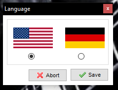

El objetivo de la presente sección aprender a realizar la instalación del servidor Apache, con los módulos de PHP, MySQL, y otros módulos útiles para un entorno de desarrollo de aplicaciones web.

Para comenzar debemos descargar XAMPP, que es uno de los entornos de desarrollo con
lenguaje PHP más popular del mundo, es una distribución de apache totalmente gratuita,
multiplataforma y de fácil instalación.
Para comenzar haz clic en la imagen de la parte superior y descarga el archivo ejecutable
según tu sistema operativo, para el ejemplo de esta OVI usaremos Windows 10 de 64 bits.
Una vez descargado el archivo ejecutamos el instalador como administrador y seguimos los pasos del instalador que son muy sencillos.
Hacemos clic en el botón siguiente y seleccionamos los módulos que queremos instalar, por default vienen todos seleccionados, recuerda que debemos instalar MySQL y PHP, además el módulo de phpMyAdmin, el cual es el entorno gráfico con el cual gestionaremos los datos de nuestra base de datos.
Una vez seleccionados los módulos a instalar has clic en siguiente y selecciona la ubicación donde se van a instalar los módulos necesarios para que nuestro servidor XAMPP funcione.
Tras seleccionar la ubicación simplemente hacemos clic en siguiente.
Dejamos activa la casilla de verificación, la cual nos lleva al sitio oficial de bitnami, donde podemos conseguir módulos y aplicaciones que pueden correr desde el servidor apache que estamos instalando, y en la pantalla siguiente a esta simplemente hacemos clic en siguiente y eso es todo.
Una vez arranque tu aplicación escoges el lenguaje para iniciar los servicios, solo hay disponibles alemán e inglés.

Al abrir el XAMPP control encontraras un panel de administración sencillo,
antes de arrancar los servicios de MySQL y Apache hacemos clic sobre Shell y
verificamos las versiones de instalación.
En la consola que se abre escribes el comando y oprimes la tecla enter, y aparecerá la versión instalada de PHP y MySQL, recuerda ejecutar cada instrucción por separado.
1 php --version
2 Mysql --version
Ahora iniciamos los procesos y accedemos a las pagina de inicio del servidor y después a nuestro phpMyAdmin, para verificar nuestro motor de base de datos.
Al arrancar tus servicios se te solicitara autorizar dichos servicios en el firewall, cuando el servicio arranca correctamente veras el nombre de los servicios resaltados en color verde, y el número de los puestos activos con los que podemos usar dichos servicios.
Ya con los servicios activos abre tu explorador web y escribe en la barra la url localhost:80,
si todo salió bien entraras a la página de bienvenida de apache, denominada localhost/dashboard/
Al hacer clic en la parte superior en phpMyAdmin, ingresaras al motor de base de datos, con lo que veras que tu instalación fue un éxito